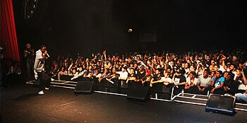
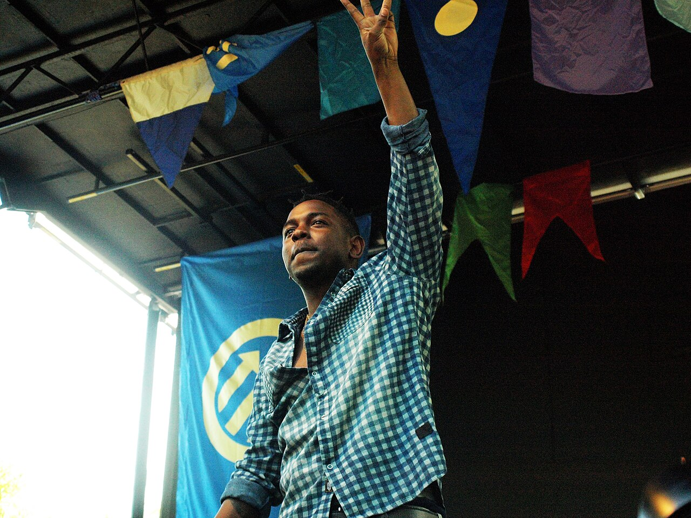
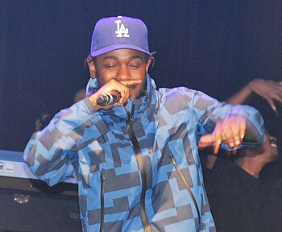
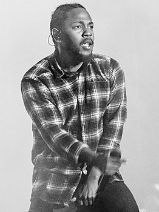
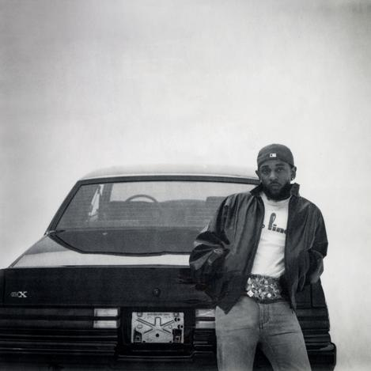

Kendrick Lamar
Информация
• Имя при рождении: Кендрик Ламар Дакворт
• Дата рождения: 17 июня 1987
• Лейблы: Top Dawg Entertainment, Interscope Records, Aftermath Entertainment и PGLang
Псевдонимы
• K.Dot
• Kung Fu Kenny
• Oklama
• King Kunta
• King Kendrick
Награды
• Премия «Грэмми» за лучшую песню в стиле «рэп» (2015)
• BET Award лучшему новому артисту (2013)
• Премия «Грэмми» за лучшее рэп-/песенное совместное исполнение (2016)
• Пулитцеровская премия за музыкальное произведение (2018)
Навигация

Track 1
Artist 1
Ке́ндрик Лама́р Да́кворт — американский рэпер и автор песен. Известный своими прогрессивными музыкальными стилями и социально сознательным написанием песен, он часто считается одним из самых влиятельных хип-хоп исполнителей своего поколения. Родившийся и выросший в Комптоне, Калифорния, Кендрик начал свою карьеру подростком, выступая под сценическим псевдонимом K.Dot. Он быстро привлек внимание местных жителей, что привело к подписанию им контракта на запись с Top Dawg Entertainment (TDE) в 2005 году. Став одним из основателей хип-хоп супергруппы Black Hippy, Кендрик отказался от своего сценического псевдонима и начал использовать своё имя профессионально. В 2011 году он выпустил свой дебютный студийный альбом Section.80, сознательную хип-хоп пластинку. Альбом был встречен положительными отзывами и включал его дебютный сингл HiiiPoWeR. В 2012 году Кендрик заключил контракт со звукозаписывающей компанией Dr. Dre Aftermath Entertainment под эгидой Interscope Records и выпустил свой второй студийный альбом Good Kid, M.A.A.D City. Альбом под влиянием Западного побережья и гангста-рэпа получил широкое признание критиков и коммерческий успех, в том числе синглы Swimming Pools (Drank), Backseat Freestyle и Bitch, Don't Kill My Vibe.
Ранняя жизнь
Кендрик Ламар Дакворт родился в Комптоне, Калифорния, 17 июня 1987 года, в семье пары из Чикаго. Хотя сам он не состоял в банде, он вырос среди этого сообщества; его ближайшими друзьями были Westside Piru Bloods, а его отец, Кенни Дакворт, был учеником человека-гангстера. Его первое имя было дано ему матерью, Паулой Оливер, в честь певца и автора песен Эдди Кендрикса из The Temptations. Он вырос на пособие и в жилищной секции 8. В 1995 году, в возрасте восьми лет, Кендрик стал свидетелем того, как Тупак Шакур и Доктор Дре снимали клип на их сингл California Love, который оказался знаменательным моментом в его жизни. В детстве он посещал начальную школу Макнейра и учебный центр "Авангард" в объединенном школьном округе Комптон. Он признался, что был тихим и застенчивым в школе, его мать подтвердила, что до семи лет он был "одиночкой". Кендрик получил дальнейшее образование в средней школе Сентенниал, которую окончил в 2005 году как отличник.
2003-2009: Начало карьеры
В 2003 году, в возрасте 16 лет, Кендрик выпустил свой первый полноформатный проект, микстейп под названием Youngest Head Nigga in Charge (Hub City Threat: Minor of the Year), под псевдонимом K.Dot. Микстейп был выпущен под лейблом Konkrete Jungle Muzik и принес Кендрику местное признание. Микстейп привел к тому, что Кендрик заключил контракт на запись с Top Dawg Entertainment (TDE), недавно основанным независимым звукозаписывающим лейблом, базирующимся в Карсоне, Калифорния. Он начал записывать материал с лейблом и впоследствии выпустил микстейп из 26 треков два года спустя под названием Training Day (2005).
На протяжении 2006 и 2007 годов Кендрик выступал вместе с другими подающими надежды рэперами Западного побережья, такими как Jay Rock и Ya Boy, на разогреве у ветерана Западного побережья рэпера The Game. Под псевдонимом K.Dot Кендрик также фигурировал в песнях The Cypha и Cali Niggaz.
Получив соавторство от Lil Wayne, Кендрик выпустил свой третий микстейп в 2009 году под названием C4, который был сильно посвящен альбому Уэйна Tha Carter III. Вскоре после этого Кендрик решил больше не использовать сценический псевдоним K.Dot и предпочел использовать свое имя. Впоследствии он выпустил одноименную расширенную пьесу в конце 2009 года. В том же году Кендрик вместе со своими коллегами по лейблу TDE Jay Rock, Ab-Soul и ScHoolboy Q сформировали хип-хоп супергруппу Black Hippy.
2010-2011: Overly Dedicated Section.80
В течение 2010 года Кендрик гастролировал с Tech N9ne и Jay Rock в рамках Independent Grind Tour. 14 сентября 2010 года он выпустил визуальные эффекты к "P&P 1.5", песне, взятой из его микстейпа Overly Dedicated, в котором участвовала Black Hippy. В тот же день Кендрик выпустил Overly Dedicated, предназначенный для цифровых ритейлеров, в рамках TDE,  а позже, 23 сентября, выпустил его бесплатно онлайн. Проект преуспел достаточно хорошо, чтобы войти в американский чарт Billboard Top R&B/Hip-Hop Albums, где он достиг 72-й строчки. Микстейп включает песню под названием "Ignorance Is Bliss", в которой Кендрик подчеркивает гангста-рэп и уличную преступность, но заканчивает каждый куплет словами "Невежество - это благо", давая понять, что "мы не знаем, что делаем"; именно эта песня заставила хип-хоп продюсера Dr. Dre работать с Кендриком после просмотра музыкального клипа на YouTube. Это, а также разговор между Дре и J. Cole. J. Cole помог познакомить Кендрика с Dre, что привело к тому, что Кендрик работал с Dr. Dre и Snoop Dogg над часто откладываемым альбомом Dre Detox, а также появились слухи о подписании Кендриком контракта со звукозаписывающим лейблом Dr. Dre Aftermath Entertainment. В декабре 2010 года журнал Complex осветил Кендрика в выпуске их серии "Инди-вступление".
В начале 2011 года Кендрик был включен в ежегодный топ-10 хедлайнеров XXL и был показан на обложке вместе с другими подающими надежды рэперами Cyhi the Prynce, Meek Mill, Fred the Godson, Mac Miller, Yelawolf и Big K.R.I.T., Lil B и Diggy Simmons. 11 апреля 2011 года Кендрик объявил название своего следующего полноформатного проекта - Section.80, а на следующий день был выпущен первый сингл HiiiPoWeR, концепция которого заключалась в дальнейшем объяснении движения HiiiPoWeR. Песня была спродюсирована коллегой - американским рэпером J. Cole, что стало их первым из нескольких совместных работ.
На вопрос о том, будет ли его следующий проект альбомом или микстейпом, Кендрик ответил: "Я в любом случае отношусь к каждому проекту как к альбому. От этого ничего не останется. Я никогда не делаю ничего подобного. Это мои оставшиеся песни, вы все можете их взять. Я собираюсь выложиться на все сто. Мои лучшие усилия. Я пытаюсь найти альбом в 2012 году".
2012-2013: Good Kid, M.A.A.D City
15 февраля 2012 года в Сеть просочилась песня Кендрика под названием "Cartoon and Cereal" с участием американского рэпера Gunplay. Позже Кендрик рассказал, что этот трек был для его дебютного студийного альбома на мейджор-лейбле и что у него были планы снять на него видео. Хотя позже песня заняла бы 2-е место в списке Complex "50 лучших песен 2012 года", в конечном счете она не появилась на дебютном альбоме Кендрика. В феврале 2012 года было объявлено, что The Fader пригласил Кендрика и рэпера из Детройта Дэнни Брауна появиться на обложке весеннего номера журнала Style . В феврале кендрик также отправился в тур Дрейка Club Paradise Tour, открывшийся вместе с другими американскими рэперами ASAP Rocky и 2 Chainz. В марте 2012 года MTV объявило, что Кендрик подписал контракт с Interscope Records и Aftermath Entertainment, что ознаменовало конец его карьеры независимого артиста. Согласно новому соглашению, проекты Кендрика, включая его альбом Good Kid, M.A.A.D City, будут совместно выпущены на лейблах TDE, Aftermath и Interscope. Также в марте Кендрик появился на Last Call с Карсоном Дэйли, где он рассказал о Dr. Dre и его родном городе Комптон, Калифорния. 2 апреля 2012 года состоялась премьера его коммерческого дебютного сингла The Recipe на канале Big Boy's Neighbourhood at Power 106. Песня, которая стала первым синглом с Good Kid, M.A.A.D City, была выпущена для цифрового скачивания на следующий день. Песня была спродюсирована продюсером с Западного побережья Scoop DeVille и включает вокал его наставника Dr. Dre, который также смикшировал пластинку.
31 июля 2012 года TDE, Aftermath и Interscope выпустили Swimming Pools (Drank) в качестве ведущего сингла с дебютного альбома Кендрика. Премьера клипа на песню, снятого режиссером Джеромом Ди, состоялась 3 августа 2012 года на канале 106 & Park. Песня достигла 17-й строчки в Billboard Hot 100 на тринадцатой неделе постепенного подъема в чарте. 15 августа 2012 года певица Леди Гага объявила через Twitter, что оба записали песню под названием PartyNauseous для его дебютного альбома. Однако Гага в последний момент отказалась от участия, сославшись на то, что это было связано с артистическими разногласиями и не имело никакого отношения к Кендрику. 17 августа 2012 года Кендрик выпустил песню под названием Westside, Right on Time с участием южного рэпера Young Jeezy. Песня была выпущена в рамках "Недели признательности Top Dawg Entertainment Fam". В течение 2012 года Кендрик также гастролировал с остальными участниками Black Hippy и рэпером MMG, Stalley в рамках тура BET Music Matters Tour.
Дебют Кендрика на мейджор-лейбле, Good kid, M.A.A.D City, был выпущен 22 октября 2012 года. Альбом дебютировал на втором месте в США, продав 242 100 копий за первую неделю. Позже в том же году Fuse TV включил сингл Кендрика Backseat Freestyle в число 40 лучших песен 2012 года. Через несколько месяцев альбом получил золотой сертификат Американской ассоциации звукозаписывающей индустрии (RIAA). HipHopDX назвал Кендрика "Ведущим года" за его награды по итогам 2012 года. В ноябре, после того, как J. Cole опубликовал фотографии,  на которых он и Кендрик работают в студии, последний сообщил, что они все еще работают над проектом, но точная дата выхода совместного альбома не была названа. 26 января 2013 года Кендрик исполнила первые синглы с альбома Swimming Pools (Drank) и Poetic Justice в скетч-комедийном и варьете-шоу NBC Saturday Night Live. В том же эпизоде Кендрик также появился вместе с приглашенным ведущим Адамом Левином и комедийной группой The Lonely Island в цифровом короткометражном выпуске SNL, который породил сингл YOLO. 22 февраля 2013 года Кендрик выпустила клип на песню Poetic Justice, снятую Джанет Джексон в сотрудничестве с канадским рэпером Дрейком. 26 февраля Кендрик исполнил Poetic Justice на Late Show with David Letterman. Всего через девять месяцев после своего релиза Good Kid, M.A.A.D City получил платиновый сертификат RIAA, первый платиновый сертификат Кендрика.
6 сентября 2013 года американский исполнитель звукозаписи и продюсер Канье Уэст объявил, что он будет хедлайнером своего первого за пять лет сольного тура в поддержку своего шестого альбома Yeezus (2013), а Кендрик будет сопровождать его в туре. The Yeezus Tour начался в октябре. В октябре также стало известно, что Кендрик войдет в восьмой студийный альбом Eminem The Marshall Mathers LP 2. 15 октября 2013 года Кендрик получил пять наград на BET Hip Hop Awards, в том числе Альбом года и автор текстов года (последнюю из которых он также выиграл годом ранее). На церемонии награждения Кендрик исполнил Money Trees, а также был на трэке Cypher вместе со своими лучшими коллегами по лейблу Dawg Jay Rock, Schoolboy Q, Isaiah Rashad и Ab-Soul. В интервью XXL в октябре 2013 года Кендрик рассказал, что после тура Yeezus он приступит к работе над своим следующим альбомом.
Кендрик получил в общей сложности семь номинаций на Грэмми на 56-й ежегодной церемонии вручения премии Грэмми (2014), включая "Лучший новый исполнитель", "Альбом года" и "Лучшая рэп-песня", но не победил ни в одной категории. Многие издания сочли, что Академия звукозаписи пренебрежительно отнеслась к Кендрику, а также к рэперу из Сиэтла Macklemore, который выиграл в номинации "Лучший рэп-альбом", на которую Кендрик также был номинирован. На церемонии Кендрик исполнил M.A.A.D City и ремикс на Radioactive в миксе с американской рок-группой Imagine Dragons на церемонии награждения.
2014-2016: To Pimp a Butterfly и Untitled Unmastered
23 сентября 2014 года Кендрик выпустил i в качестве первого сингла со своего третьего альбома. 15 ноября 2014 года Кендрик вновь появился в Saturday Night Live в качестве музыкального гостя, где он исполнил i и Pay for It, появившись вместе с Jay Rock. Своим внешним видом, с затемненными контактными линзами и частично распущенными косами, Кендрик отдал дань уважения нью-йоркскому рэперу Method Man, чей дебютный альбом Tical в тот день отпраздновал свое 20-летие. 17 декабря 2014 года Кендрик дебютировал с новой песней без названия в одном из заключительных эпизодов The Colbert Report. В начале 2015 года Кендрик получил награду за лучшее рэп-исполнение и лучшую рэп-песню за свою песню на 57-й ежегодной премии "Грэмми". 9 февраля 2015 года он выпустил второй сингл со своего третьего альбома под названием The Blacker the Berry. Первоначально ожидавшийся релиз 23 марта 2015 года, его новый альбом To Pimp a Butterfly был выпущен на неделю раньше, 16 марта 2015 года, и получил восторженные отзывы. Альбом дебютировал на вершине американского чарта Billboard 200, разошедшись тиражом 324 000 копий за первую неделю, и установил мировой рекорд потоковой передачи Spotify за первый день (9,6 миллиона). Позже Кендрик был показан на обложке журнала Rolling Stone, а редактор Джош Иллс написал, что он "возможно, самый талантливый рэпер своего поколения". 17 мая 2015 года Кендрик появился в официальном ремиксе на песню американской певицы и автора песен Тейлор Свифт Bad Blood, а также снялся в музыкальном видео. Оригинальная песня вошла в пятый студийный альбом Свифт 1989. Сингл занял первое место в Billboard Hot 100, а музыкальное видео принесло им премию Грэмми за лучшее музыкальное видео и музыкальную премию MTV Video Music Award за видео года. To Pimp a Butterfly выпустили еще три сингла с сопровождающими их музыкальными видеоклипами: King Kunta, Alright и These Walls. Клип на песню Alright получил четыре номинации на MTV Video Music Awards 2015, включая "Видео года" и "Лучшее мужское видео". Песня For Free? (Interlude) также был показан музыкальный клип, как и u с песней For Sale в рамках короткометражного фильма God Is Gangsta. В октябре 2015 года Кендрик анонсировал тур Kunta's Groove Sessions, который включал восемь концертов в восьми городах. В начале 2016 года Канье Уэст выпустил трек No More Parties in L.A. на своем официальном SoundCloud, созданный совместно с Кендриком и спродюсированный Уэстом и Madlib. Кендрик также исполнил новую песню Untitled 2 на The Tonight Show Starring Jimmy Fallon в январе.
4 марта 2016 года Кендрик выпустил сборник без Untitled Unmastered, содержащий восемь треков без названия, каждый датированный. Треки были незаконченными дэмо-записями с альбома To Pimp a Butterfly. Альбом-сборник дебютировал на вершине американского Billboard 200.
2017-2018: DAMN., саундтрек к Черной пантере и перерыв
23 марта 2017 года Кендрик выпустил промо-сингл The Heart Part 4. Неделю спустя Кендрик выпустил ведущий сингл под названием Humble,
сопровождаемый музыкальным видео на него. 7 апреля 2017 года его четвертый студийный альбом стал доступен для предварительного заказа и
был подтвержден к выпуску 14 апреля 2017 года. 11 апреля Кендрик анонсировал название альбома Damn (стилизованное под DAMN.),
а также список треков, в котором подтвердили гостевые выступления Рианны, Zacari и U2. Альбом был выпущен 14 апреля 2017
года и получил восторженные отзывы, а автор Rolling Stone описал его как  сочетание "старой школы и нового уровня". Это был его третий
альбом под номером один в чарте Billboard 200, а сингл Humble стал его первым номером один в качестве ведущего сингла в Billboard Hot 100.
4 мая 2017 года DAMN. был сертифицирован Американской ассоциацией звукозаписывающей индустрии (RIAA) как платиновый. Кендрик позже выпустил DAMN.
COLLECTORS EDITION в середине декабря 2017 года, с трек-листом оригинального альбома в обратном порядке.
Вместе с Tiffith Кендрик спродюсировал и выступил куратором саундтрека к фильму о супергероях Marvel Studios Черная пантера (2018)
под названием Black Panther: The Album. Сингл из саундтрека All the Stars был выпущен в январе 2018 года с участием певици SZA, и
он принес ему номинацию на премию Оскар за лучшую оригинальную песню. Вскоре после этого Jay Rock выпустил еще один трек под названием King's Dead с
участием Кендрика, Future и Джеймса Блейка. Третий сингл, Pray For Me, Кендрика и The Weeknd, был выпущен в феврале 2018 года, в преддверии выхода
альбома в том же месяце. Black Panther: The Album был выпущен 9 февраля 2018 года.
сочетание "старой школы и нового уровня". Это был его третий
альбом под номером один в чарте Billboard 200, а сингл Humble стал его первым номером один в качестве ведущего сингла в Billboard Hot 100.
4 мая 2017 года DAMN. был сертифицирован Американской ассоциацией звукозаписывающей индустрии (RIAA) как платиновый. Кендрик позже выпустил DAMN.
COLLECTORS EDITION в середине декабря 2017 года, с трек-листом оригинального альбома в обратном порядке.
Вместе с Tiffith Кендрик спродюсировал и выступил куратором саундтрека к фильму о супергероях Marvel Studios Черная пантера (2018)
под названием Black Panther: The Album. Сингл из саундтрека All the Stars был выпущен в январе 2018 года с участием певици SZA, и
он принес ему номинацию на премию Оскар за лучшую оригинальную песню. Вскоре после этого Jay Rock выпустил еще один трек под названием King's Dead с
участием Кендрика, Future и Джеймса Блейка. Третий сингл, Pray For Me, Кендрика и The Weeknd, был выпущен в феврале 2018 года, в преддверии выхода
альбома в том же месяце. Black Panther: The Album был выпущен 9 февраля 2018 года.
В январе 2018 года истек срок действия контракта Кендрика на публикацию песен с Warner Chappell Music; TDE требовала от 20 до 40 миллионов долларов за каталог рэпера. Кендрик открыл 60-ю ежегодную премию Грэмми попурри из песен XXX, Lust, DNA, Humble, King's Dead и New Freezer рэпера Rich the Kid. Он также был номинирован на семь наград, включая "Альбом года" и "Лучший рэп-альбом", а также "Запись года", "Лучшее рэп-исполнение", "Лучшая рэп-песня" и "Лучшее музыкальное видео" за Humble и "Лучшее исполнение в рэп-исполнении" за Loyalty с Рианной. В конечном счете Кендрик получил пять наград на церемонии: за лучший рэп-альбом, лучшее рэп-исполнение, лучшую рэп-песню, лучшее музыкальное видео и лучшее рэп/спетое исполнение. После саундтрека к "Черной пантере" Кендрик не выпускал собственную музыку в течение четырех лет.
2020-2024 Super Bowl LVI halftime show
13 февраля 2022 года Кендрик стал хедлайнером шоу Super Bowl LVI halftime show вместе с Dr. Dre, Snoop Dogg, Eminem, 50 Cent и Mary J. Blige, которое принесло ему премию Primetime Emmy Award for Outstanding Variety Special (Live). 8 мая он выпустил промо-сингл The Heart Part 5. Пятый студийный альбом Кендрика, Mr. Morale & The Big Steppers, был выпущен 13 мая. В преддверии его выхода он посетил Гану, чтобы снять мини-документальный фильм для Spotify. Он также пригласил музыкальных руководителей и других ганских артистов, таких как Stonebwoy, Amaarae, Black Sherif и Smallgod, и встретился с ними во время частной вечеринки по прослушиванию альбома в Аккре. В июне он выступил на показе мужской коллекции Louis Vuitton Весна/лето 2023 в честь их покойного художественного руководителя Вирджила Абло в Лувре во время Недели моды в Париже. Позже он стал хедлайнером заключительного вечера фестиваля в Гластонбери. 9 сентября 2024 года стало известно, что Кендрик Ламар выступит на «Супербоуле» в 2025 год. Игра состоится 9 февраля на стадионе Caesars Superdome в Новом Орлеане.
Ноябрь 2024 года: GNX
GNX - шестой студийный альбом Кендрика. Он был выпущен в качестве альбома-сюрприза на лейблах Playing и Interscope Records 22 ноября 2024 года. Альбом GNX, названный в честь модели Buick Regal и являющийся продолжением альбома Mr. Morale & the Big Steppers (2022) и его вражды с канадским рэпером Дрейком, стал первым альбомом Ламара после его ухода с давних лейблов Top Dawg Entertainment и Aftermath Entertainment. Ламар и Дэйв Фри выступили исполнительными продюсерами альбома, в записи которого приняли участие AzChike, Dody6, Hitta J3, Пейсо, Родди Рич, Siete7x, SZA, Wallie the Sensei и YoungThreat; Дейра Баррера, Сэм Дью и Ink в несли дополнительный вокальный вклад на протяжении всего альбома.Продюсированием в основном занимались Sounwave и Джек Антонофф, а также Мастард, Шон Момбергер и Камаси Вашингтон, среди прочих. Альбом был выпущен и получил широкое признание критиков. Mr. Morale & the Big Steppers стал последним альбомом Ламара с Top Dawg Entertainment (TDE), с которым он подписал контракт в 2005 году. Прежде чем его вражда с канадским рэпером Дрейком возобновилась, он тихо ушел из Aftermath Entertainment и подписал прямое лицензионное соглашение с их дистрибьютором, Записи Interscope. Ламар выпустил пять самостоятельных синглов во время последней части их "конфликта", в том числе "Like That" и "Not Like Us", занявшие первые места в Billboard Hot 100. Рэпер подразнил песню, на тот момент не имевшую названия, в начале музыкального клипа на нее. Entertainment Weekly заметил ее включение, и поклонники предположили, что она может быть включена в его следующий альбом; выяснилось, что песня называется "Squabble Up".
GNX состоит из 12 песен и длится 44 минуты и 20 секунд; это самый короткий студийный альбом в карьере Ламара. Хотя в альбом не вошло ни одного трека из его вражды с Дрейком, по словам Vulture, его настроение "все еще витает над альбомом". Это хип-хоп альбом Западного побережья, основанный как на классических, так и на современных традициях жанра. Согласно Rolling Stone, альбом является данью уважения родному Лос-Анджелесу Ламара, в его композициях заметно преобладает джи-фанк.
Мексиканская певица Дейра Баррера присутствует как на вступительном, так и на заключительном треках альбома, а также в "Reincarnated", п осле того как Ламар увидел выступление певицы на матче "Лос-Анджелес Доджерс".Продюсерская группа играла на инструментовке Барреры, и дал ей описание эмоций, которые Ламар хотел вызвать на протяжении всего альбома. В "Reincarnated" Ламар предстает в воображаемых прошлых жизнях, прежде чем текст переходит к его разговору с Богом. В "TV Off" есть "обрезанные струны", которые "превращаются в рога викингов-берсерков" на полпути. Когда звуки перкуссии во второй части стихают, слышно, как Ламар "оживленно" выкрикивает имя Горчицы; с тех пор это стало интернет-мемом. На "Heart Pt. 6", он рассказывает о своей истории с TDE и супергруппой Black Hippy, признавая свою роль в распаде группы из-за творческих разногласий. Бен Сисарио из New York Times отметил, что это "косвенный ответ" на одноименный дисс-трек Дрейка, который сам по себе был взят из серии песен Ламара "The Heart". Заглавный трек, "GNX", записан совместно с лос-анджелесскими рэперами Peysoh, Hitta J3 и YoungThreat. У Ламара нет куплета, вместо этого он задает вопрос: "кто снова поставил Запад перед лицом дерьма?"
Музыкальный стиль и техника исполнения
Музыкальный стиль Кендрика известен как "анти-яркий, интерьерный и сложный". Его творчество обычно классифицируется как прогрессивный рэп из-за его вклада в расширение аудитории жанра, чтобы охватить основных слушателей. Он заявил в интервью, что "Вы действительно не можете классифицировать мою музыку, это человеческая музыка". Дебютный студийный альбом Кендрика Section.80 был отнесен к категории сознательного хип-хопа. На его второй альбом Good Kid, M.A.A.D City, оказали сильное влияние хип-хоп Западного побережья и гангста-рэп 1990-х. Его следующие три альбома, To Pimp a Butterfly, DAMN. и Mr. Morale & the Big Steppers, классифицируются как записи сознательного хип-хопа; To Pimp a Butterfly включает элементы джаза, соула, фанка и разговорной поэзии, DAMN. опирается на R&B, поп и психоделические влияния соула, а также Mr. Morale & the Big Steppers используют минималистичное производство.
The New York Times назвал Кендрика техничным рэпером, "гибкий и ловкий" поток переключается с производных на генеративные показатели, включая внутренние и многосложные схемы рифмовки. Он также известен своей "готовностью экспериментировать со своим голосом", часто используя интонации для передачи сложных эмоций и рассказывания историй через нескольких персонажей. Тирхака Лав из MTV пишет, что, расширяя свой вокальный диапазон, Кендрик "обращается к родословной, которая проходит через основополагающие работы Джеймса Брауна в 60-х; психоделические 70-е; потную фантасмагорию Принса в 80-х; и гангста-рэп в 90-х. В каждую из этих эпох художники растягивали человеческий голос, чтобы побудить слушателей задуматься о силах, обитающих в наших телах, ожидающих звука, который вызовет их к жизни".